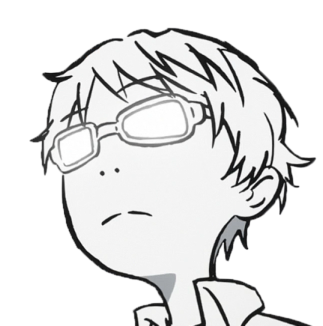

Họ và tên: Nguyễn Văn A
Địa chỉ: Hà Nội, Việt Nam
Số điện thoại:
Email: nguyen_van_a@gmail.com

Học vấn
-
2010 - 2013:
2013 - 2018: Đại học Nông lâm TP HCM
Bằng cấp
- Kỹ sư Công nghệ thực phẩm
- Tiếng Anh: TOEIC 450 điểm
- Tiếng Nhật: N3
Kỹ năng
- Giao tiếp
- Giải quyết vấn đề
- Làm việc nhóm
Kinh nghiệm
- 2 năm làm việc ở Viện Khoa Học Kỹ Thuật Nông Nghiệp Miền Nam